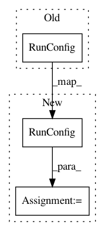

5ec4a619f869bc0ba43e886bb87bb96475eb4e74,src/train.py,,main,#Any#,191
Before Change
// Initialize the classifier
classifier = tf.estimator.Estimator(model_fn=model_fn,
model_dir=FLAGS.output,
config=tf.contrib.learn.RunConfig(
session_config=
_get_session_config()))
// Train the model
classifier.train(input_fn=lambda: _get_input_stream(), hooks=hooks)
After Change
def main(argv=None):
custom_config = tf.estimator.RunConfig(session_config=_get_session_config(),
save_checkpoints_secs=30)
// Initialize the classifier
classifier = tf.estimator.Estimator(model_fn=model_fn.model_fn,
model_dir=FLAGS.train_output,
config=custom_config)
// Train the model
classifier.train(input_fn=lambda: _get_input_stream())
In pattern: SUPERPATTERN
Frequency: 3
Non-data size: 3
Instances
Project Name: weinman/cnn_lstm_ctc_ocr
Commit Name: 5ec4a619f869bc0ba43e886bb87bb96475eb4e74
Time: 2018-07-02
Author: am.lamsal@gmail.com
File Name: src/train.py
Class Name:
Method Name: main
Project Name: weinman/cnn_lstm_ctc_ocr
Commit Name: 0bf56c5e8db53e152e7095087499d072018283e6
Time: 2018-06-29
Author: am.lamsal@gmail.com
File Name: src/test.py
Class Name:
Method Name: main
Project Name: Qiskit/qiskit-aqua
Commit Name: f5fe67dc55788f9ab1a7d56557de4c792cf4a249
Time: 2019-01-22
Author: chenrich@us.ibm.com
File Name: qiskit_aqua/_aqua.py
Class Name:
Method Name: run_algorithm